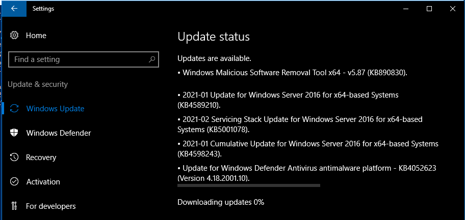
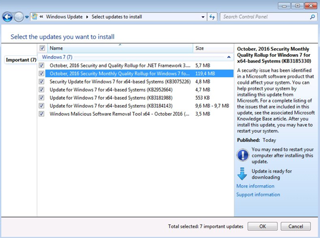
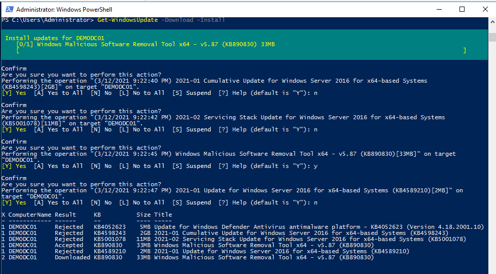
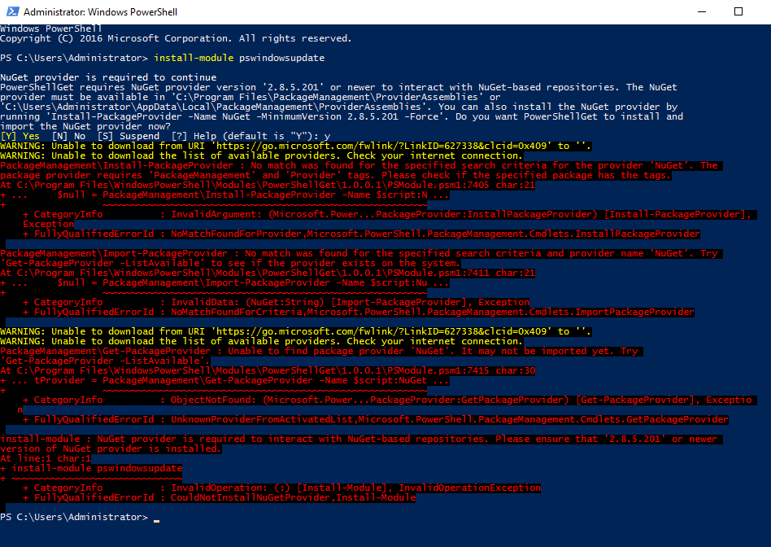
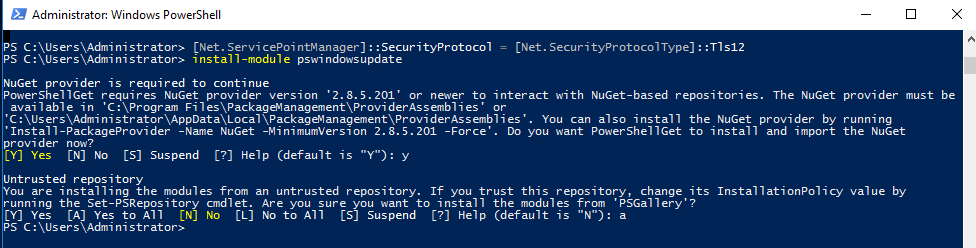
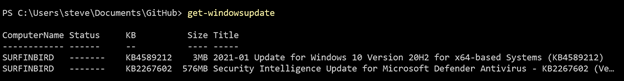
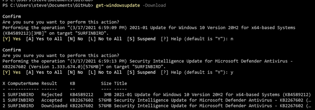
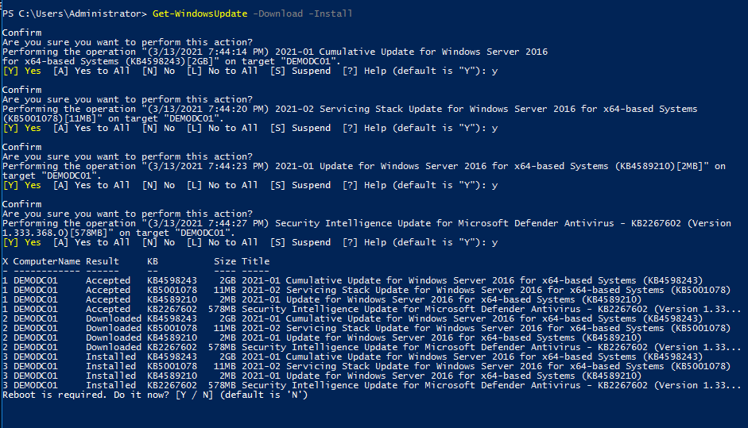
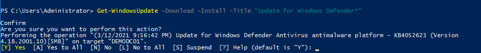
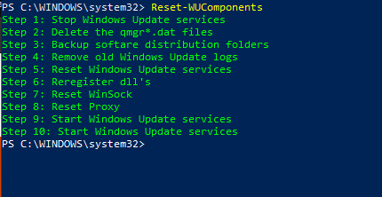

PSWindowsUpdate: Take Back Control of Windows Update
Author: Steve

"I think I've made a big mistake."
Once upon a time, sysadmins could freely check for updates without installing them at the same time. One could look down the barrel of the Windows Update firehose's nozzle and choose the water pressure at their leisure. Back in the day, to have manual control, you didn't need to triage the torrent of KBs via WSUS or blindly install it all whilst praying to the Redmond gods that you wouldn't get a bum update wrecking your system. Nervously refreshing askwoody.com and the Patch Management mailing list in anticipation of an outbreak of COVID-SERVER-19 was (and let's be real here, still is) a standard practice in the modern Windows era of monthly rollups over small granular patches.

What was wrong with this, Microsoft? (Photo credit: mspoweruser.com)
If you've listened to our podcast, you are in no doubt aware of our disdain for the apparent lack of quality assurance personnel for Windows Updates as of late. I'd argue this wouldn't even be half bad if it weren't "Windows 10 era" Microsoft operating systems' appetite for vacuuming up any available update at a moment's notice while removing the granular KB selection options that were present from the Windows 7 and 8.1 years. Thankfully, I am happy to report that while the GUI options may no longer be with us, there is still a way to maintain manual control over incoming updates. Our hero of the day is Michal Gajda and his PSWindowsUpdate module.
PSWindowsUpdate is a PowerShell module capable of checking for Windows Updates and offering an entire utility belt of tools dedicated to giving us the endpoint patching controls that are now out of reach. Immensely helpful for a fine variety of use cases, the module is dead simple to install, and even deader simpler (sorry) to use.

You get to see what's available, accept or deny whatever you'd like, and you can even download/pre-stage without installing!
Installing PSWindowsUpdate is just a matter of running Install-Module PSWindowsUpdate and confirm when prompted. I recommend doing this in a PowerShell window that is being run as Administrator. I've found that systems older than Server 2019 may require you to update the settings on your .NET Service Point Manager's security protocol to use TLS 1.2, otherwise you will get a download error. The command to fix this setting is a simple one-liner (run as Administrator in PowerShell, naturally): [Net.ServicePointManager]::SecurityProtocol = [Net.SecurityProtocolType]::Tls12

If you don't have your .NET Service Point Manager security protocol configured to use TLS 1.2, you get these scary errors.

Much better. You also need to install the "NuGet provider" as a pre-requisite for this. Just accept the prompt and proceed with the installation. "Y" to the first one, "A" to the second one.

Behold the PSWindowsUpdate cmdlets!
I'm not going to parrot everything the module's very-well-done documentation covers, but instead I just want to go over some highlights and favorites that I feel you will find incredibly useful. Obviously these are not the only use cases for this toolkit, but it's just what I find myself coming back to most frequently.
Let's start with the basics: Want to check for Windows Updates but don't necessarily want to commit to anything? Simply run Get-WindowsUpdate and that should do the trick.

Behold: A true "Check for updates" button with no snake oil tactics.
It only gets simpler from here. If you'd like to download (but not install) these updates, add a "-Download" to the end of the command. By default, you will be asked to confirm before anything is downloaded, so there's no commitment required. Below you'll see me deny an update and accept another, at my leisure:

REJECTED! This is MY system, and YOU are a guest, Microsoft!
To cap off the trilogy of common update tasks, add "-Install" to...well, install the updates, as well as downloading them, etc. Example below with a Server 2016 box (yes, it even covers reboot prompts):

Not since the Nintendo Entertainment System days have we seen such good control.
If you have an idea on what updates you want to install by their titles, PSWindowsUpdate offers searchability by update title, and includes wildcard support. For example, let’s say I want to simply update my Defender definitions and platform without bothering with thumbing through all the other updates that may or may not be available for the system I’m working on. We simply run this: Get-WindowsUpdate -Download -Install -Title "Update for Windows Defender*" and the cmdlet will search for matching entries.

Exactly what I want! No distractions!
Lastly, if you want to reach out to Microsoft Update (good for systems that are bound to WSUS or an internal update source), you can also add "-MicrosoftUpdate" to the command if you wish, which is great for odds and ends like SCEP/Microsoft Defender Antimalware engine updates, SQL Server cumulative updates, VMware drivers, Silverlight patches, etc.
If you thought this wasn't amazing enough: I've also had good luck with using PSWindowsUpdate to fix Windows Update problems. An included command known as "Reset-WUComponents" will roll all of those arduous Windows Update engine reset tasks into one simple one-stop-shop cmdlet:

Remember when you had to know how to do all this by hand? Well now you can repurpose that part of your brain.
Anyways, that's about all I wanted to say about that. PSWindowsUpdate has a whole bunch more utility in this module that I haven't covered here, and I invite you to peruse the documentation for the module via its built-in "get-help" integration. Additional included features such as the ability to manually in a downloaded MSU file, remove updates, view a detailed update history, configure settings, and more. You would think Microsoft would include utilities like this natively in the operating system for power users, but at least it's available as a third party module. I invite you to try this out and enjoy all of the settings that we used to have in the Windows GUI, plus many more much-desired patching tools.
Hope this helps!